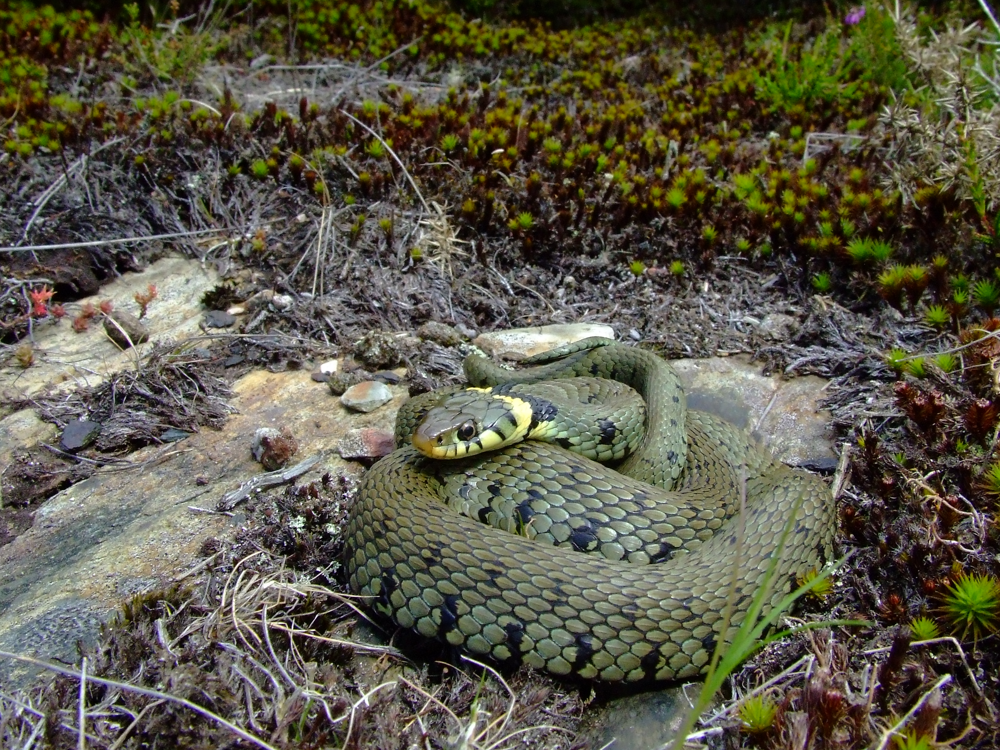
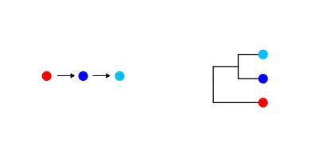
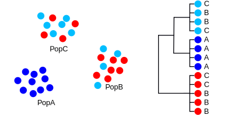
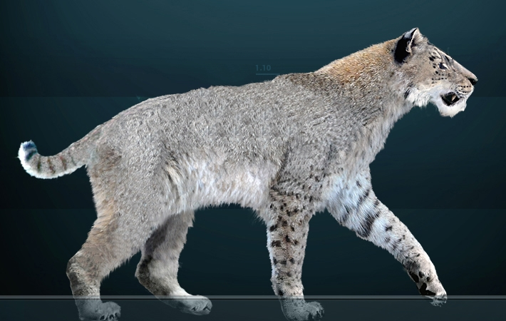
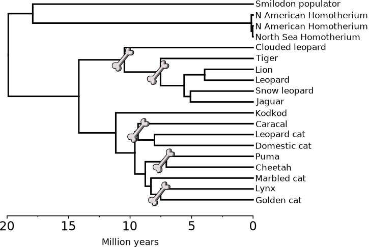

Gene trees and molecular dating
BSX-3139 Molecular Ecology and Evolution
Dr Axel Barlow
email: a.barlow.@bangor.ac.uk
Gene trees and molecular dating
- What are gene trees?
- What can they be used for?
- What shapes the gene tree?
- Calibrating trees
Gene tree
- Evolutionary history of a genetic locus, represented as a tree
- (not always an actual gene)
- Can be used to infer species or population histories*
- Any recombining genome has multiple loci, each with its own gene tree
- Easy to calculate using genetic data (often sequences)
Gene tree terminology

What can we use gene trees for?
Gene trees in Molecular Ecology

Grass snakes

Grass snakes
Glacial refugia

What shapes the gene tree?
Allele evolution

An example

An example

An example

An example

An example

An example

Observations
- Drift sorts the lineages into clades
- This takes time, we can't detect the divergence immediately
- We go through stages of complete/incomplete monophyly
- Mutation builds upon the clades, monophyly is retained [unless there is gene flow]
- In this example, the phylogeny does not represent the sequence of population splits
- The phylogenetic divergence times are older than the population splits
- Each locus goes through its own history of lineage sorting
- The unpredictability is reduced with smaller population sizes and older splits [more drift]
- These processes are the same for species-level phylogenies
Evidence from whole genome analysis

Barlow et al. 2018. Nat. Ecol. Evol
- Brown bear, polar bear, extinct cave bears
- Aligned nuclear genomes, divided into 25 kb blocks
- Only 50 % of blocks show the correct species relationships
- Rest are a mix of all possible topologies
Calibrating trees
Branch length are typically scaled to genetic distance

Imagine if they could be scaled to time

Molecular clock hypothesis
- Substitutions seem to occur at an approximately constant rate
- This means genetic distance is proportional to time
- Sometimes the relationship breaks down (divergent lineages, saturation, selection)
- At the population level it generally works well

Methods of calibrating the tree
- If we assume a molecular clock, we can use external sources of information to calibrate the tree
- Genetic distance per unit time
There are 3 (interdependent) parameters of interest:
- Tip ages: sampling dates, radiocarbon ages, or unknown
- Node ages: population divergence times, fossils, or unknown
- Substitution rate: previous estimates, related species, or unknown
Brown bears
- Radiocarbon dates, estimate substitution rate, coalescence times, and an unknown age

Sabretooth cat genera
- When did they diverge from living cats?
- How diverged are they from one another?
Smilodon

Homotherium

Sergiodlarosa, CC BY-SA 3.0
Molecular dating of sabretooth cats

Molecular dating of sabretooth cats
Next time:
Ancient DNA 1